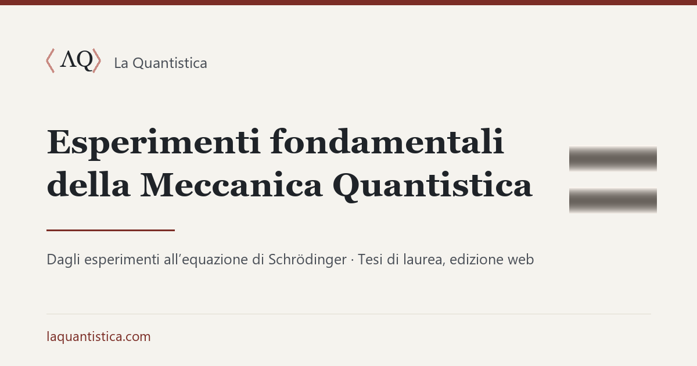
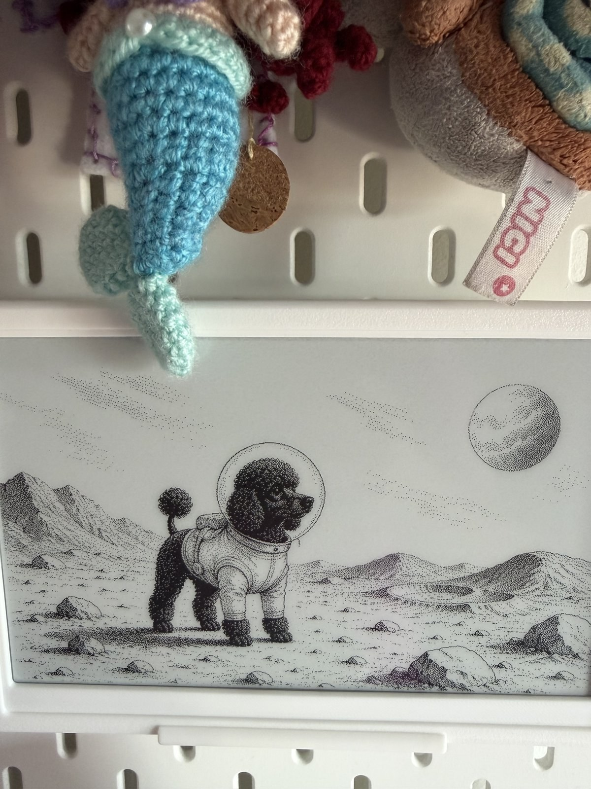
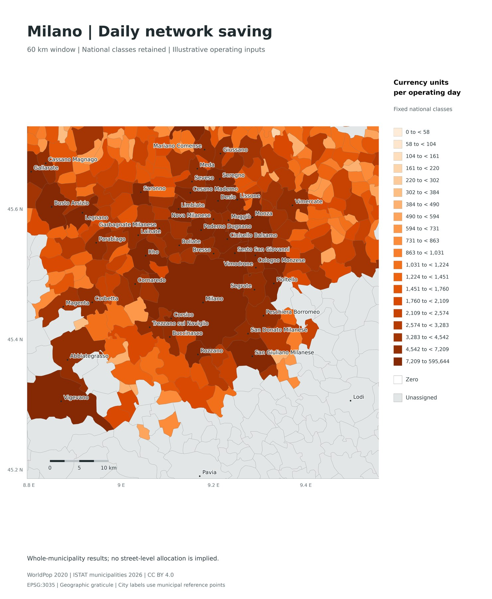
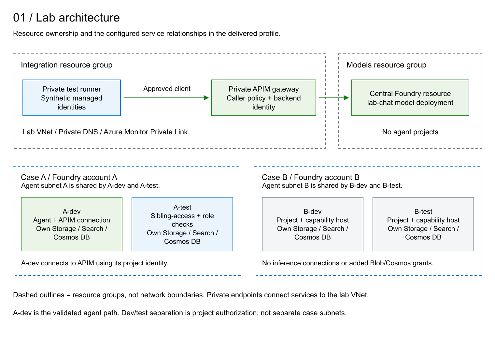

Engineer and technology leader
Faustino Palma
I design and build cloud and AI systems.
I start from the problem, build the system, and verify how it behaves. Constraints, costs, and operational limits remain explicit.
Selected workSelected work
Experiments, systems, and tools
Each project states what was built, what was observed, and where the result stops.

01
La Quantistica
A course that starts from the fundamental experiments of quantum mechanics and derives the Schrödinger equation instead of assuming it. The work began as my 1999 degree thesis and was presented at the 85th Congress of the Italian Physical Society.
The web edition separates measured experiments, theoretical deductions, simulations, and later additions.

02
Lanternina
A home activity system for adolescents. AI proposes an activity; a parent reviews it; paper and e-paper devices deliver it. The local hub controls equipment and time, while models run in Microsoft Foundry.
Content safety and parental approval are gates. No model runs in the house.

03
Territorial Service Network Lab
Python and R notebooks compare centres that dispatch teams across a territory. The method estimates productivity, travel time, cost, coverage, and shared capacity from explicit inputs.
Public geography is real. Demand, premises, capacity, costs, and travel scenarios are illustrative.
04
Cantina
Java tools written in 2002 to automate the assessment of large network configurations. The repository preserves the original code and explains the processing pipeline.
05
Microsoft Foundry Governance Lab
A deployable reference lab for model access, managed identities, private networking, data protection, and an API Management AI gateway.

06
Anomaly Detection Fabric Demo
A multivariate industrial-monitoring demo using Transformer autoencoders, ONNX, Fabric Eventstream, and Eventhouse. Controlled injections expose detections, misses, and false alarms.
07
AWR Assessment
Python tools for extracting and reviewing Oracle AWR report data. The implementation is public; the repository currently contains only minimal documentation.
Method
From an observed problem to a tested system
- 01
Define the boundary
State the decision, the available evidence, and what remains unknown.
- 02
Build the smallest complete path
Connect architecture, implementation, operations, and the people who must use the result.
- 03
Measure the behaviour
Test expected outcomes, failures, recovery, cost, and limits. A successful deployment is not sufficient evidence.
Experience
Architecture, delivery, and operations
My work has moved between engineering, consulting, programme delivery, and cloud architecture. The common task is to make a technical decision executable.
- 15
- Amazon Logistics sites delivered in Italy
- 20%
- increase in launch cadence from a Python programme-management tool
- >€50M
- business cases managed for logistics programmes
- 20+ years
- from network engineering to cloud and AI systems
2021–Microsoft · Chief Cloud + AI Solution Architect
2019–2021AWS · Senior Solutions Architect
2017–2019Amazon Logistics · Launch Program Manager
2008–2017BCG, EFESO · Consulting
2000–2006Getronics, Lutech · Network engineering
Contact
Public work and professional contact
Source code and technical notes are on GitHub. Career history and direct contact are on LinkedIn.